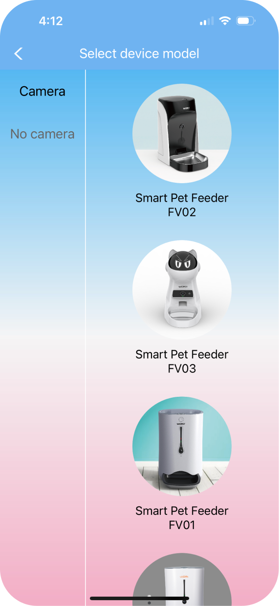
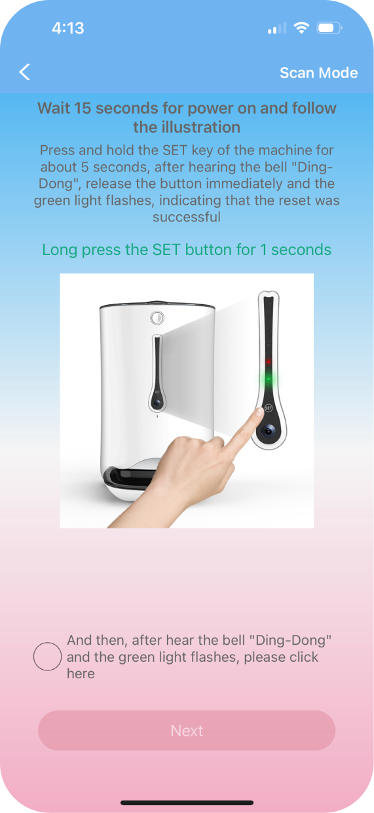
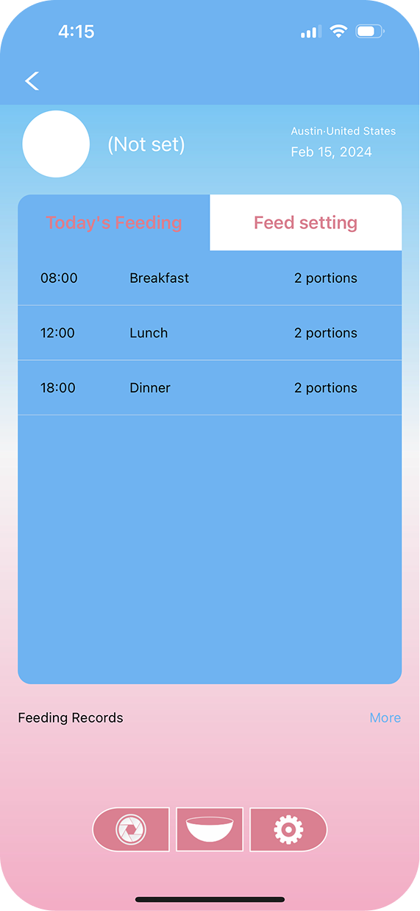
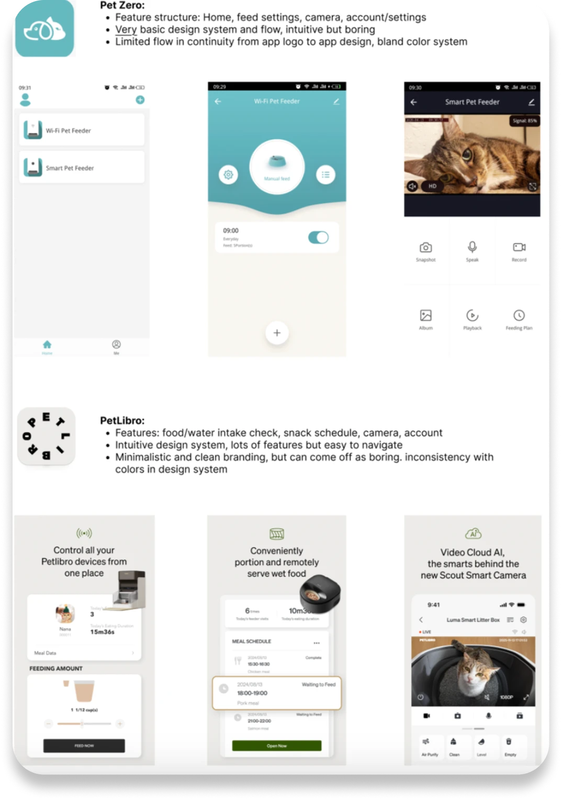
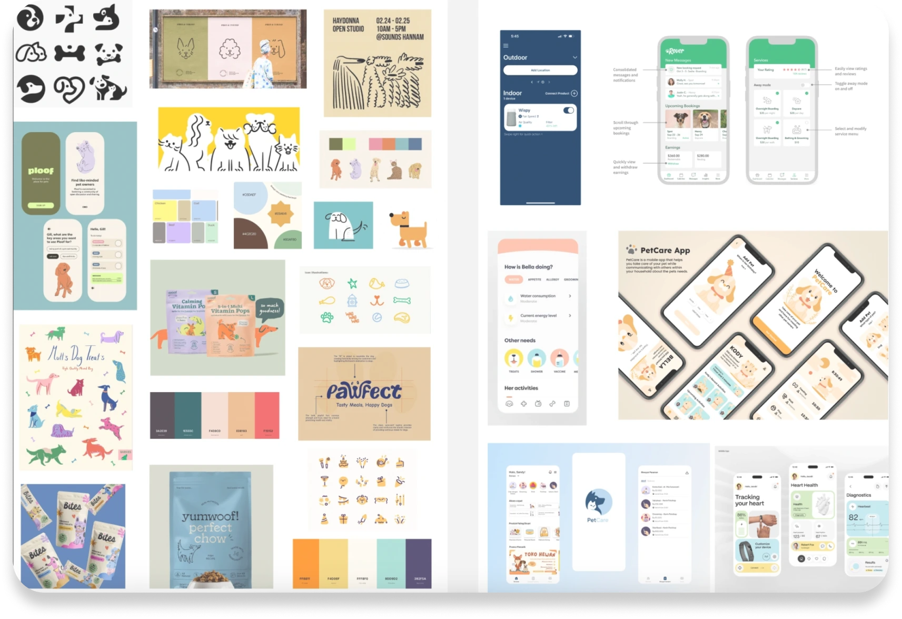
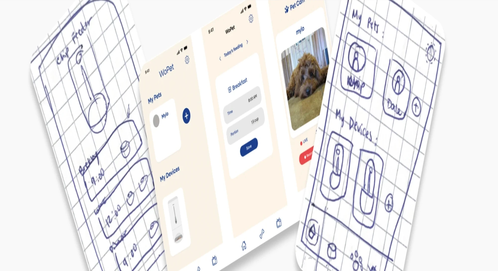

Redesigning Wopet
A one-week sprint reimagining the remote pet-care experience
The Challenge
How might we redesign WoPet's flow so pet owners can instantly see when their pet was last fed, when the next feeding is scheduled, and whether their devices are connected — all while giving the app a warm, trustworthy feel that reflects genuine care for pets, not just smart-home functionality?
Research
The app's main issues are visual inconsistency, lack of confirmation, and confusing copy. Owners can't easily see if their pet was fed or when the next meal is due, as the home screen is mostly empty and the schedule tab looks uniform. Key steps lack guidance, like an unexplained grayscale time picker and a strict onboarding process. These problems are worsened by inconsistent, awkward translations and shifting visual styles, which reduce trust in the product's reliability for remote pet feeding.



Competitor Analysis
After analyzing the existing WoPet app, I researched existing competitors in the market to understand where my redesign could offer a unique value add compared to them.
Apps like Pet Zero were intuitive to use, but possessed limited in-app features and a visually bland design system. More advanced tools like PetLibro offered many unique features, but had weak branding and inconsistent design choices.

Moodboarding

During the moodboarding process, I took a multi-step approach to differentiate the style guide from the functionality of the app, since this was a complete redesign of both sectors.
In terms of visual design, I was inspired by modern illustrative motifs from pet products, along with eye-catching colors that invoke a playful feel. As for flow and functionality, I took inspiration from apps with similar goals, such as remote fitness tracking apps, pet-care apps like Rover, and veterinary care tools.
Sketches & Early Iterations
To define the overall look and flow of the basic redesigned features, I created low-fi sketches of my design, including initial ideas for design choices like icons.
Using these low-fi sketches, I used Figma to bring my ideas to life through a mid-fi prototype, incorporating a basic color scheme inspired by the moodboarding done earlier. After a few iterations of fonts, icons, and logos, I settled on a combination that conveyed the illustrative, playful, yet simple feel I wanted to inject into this redesign.

Final Design
This redesign includes three main screens, each with multiple offshoots: home (pets & devices), quick feed send, and a live camera feed connecting to the device.
Since my overall vision was to create a playful, illustrative, yet visually clean design, I aimed to incorporate small pops of color supplementing a soothing primary color scheme. To do this, I created small elements resembling pet toys in multiple bright colors, used as decorative elements throughout the app — first introduced as motifs falling from the top of the screen on the initial loading page.
Illustrative additions such as hand-drawn animals and feeders add a personal and inviting touch to the customization features.
Envisioning Future Improvements
If I had more time to dedicate to this project, I would focus on broadening the app's feature set to better support pet owners. My research revealed how brands like PetLibro thoughtfully integrate support for multiple pets and devices, which resonated with me. While my redesign includes the ability to add multiple pets and devices, I see room to improve features like the camera experience to more clearly reflect a multi-pet environment. This project has only scratched the surface, and I'm excited by the possibilities for continued growth and innovation in my redesign.